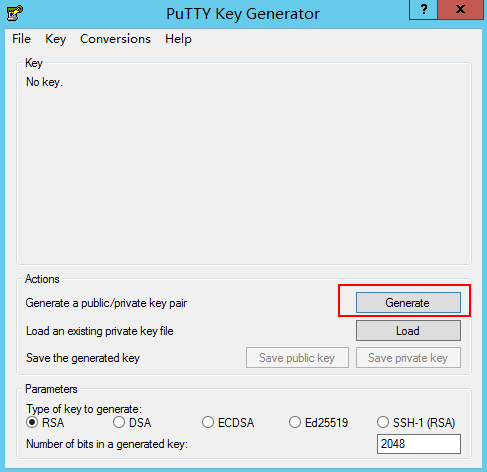

Symptom
When you try to import a key pair that you created using puttygen.exe on the management console, the system displays a message indicating that the import failed.
Possible Causes
The format of the public key content does not meet system requirements.
If you store a public key by clicking Save public key on PuTTY Key Generator, the format of the public key content will change. Therefore, you cannot import the key on the management console.
Solution
Use the locally stored private key and PuTTY Key Generator to restore the format of the public key content. Then, import the public key to the management console.
- Double-click puttygen.exe to open PuTTY Key Generator.Figure 1 PuTTY Key Generator
 - Click Load and select the private key.
The system automatically loads the private key and restores the format of the public key content in PuTTY Key Generator. The content in the red box in Figure 2 is the public key whose format meets system requirements.
- Copy the public key content to a .txt file and save the file in a local directory.
- Import the public key to the management console.
- Log in to the management console.
- Click
 in the upper left corner and select your region and project.
in the upper left corner and select your region and project. - Under Computing, click Elastic Cloud Server.
- In the navigation pane on the left, choose Key Pair.
- On the right side of the page, click Import Key Pair.
- Copy the public key content in the .txt file to Public Key Content and click OK.